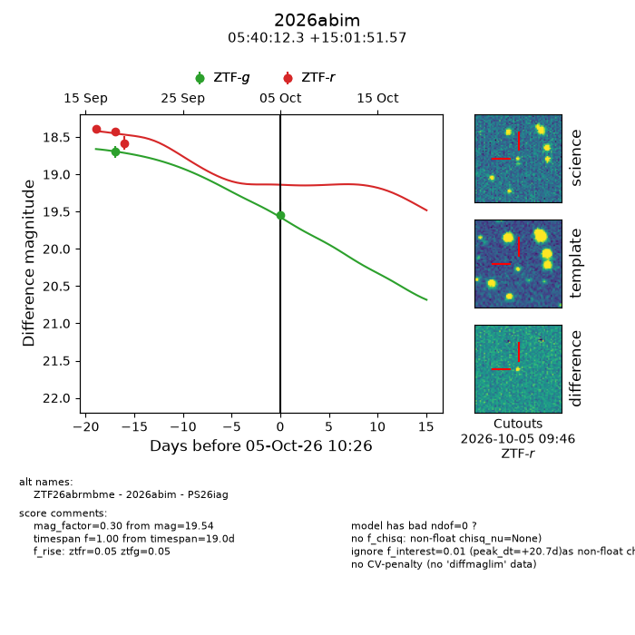
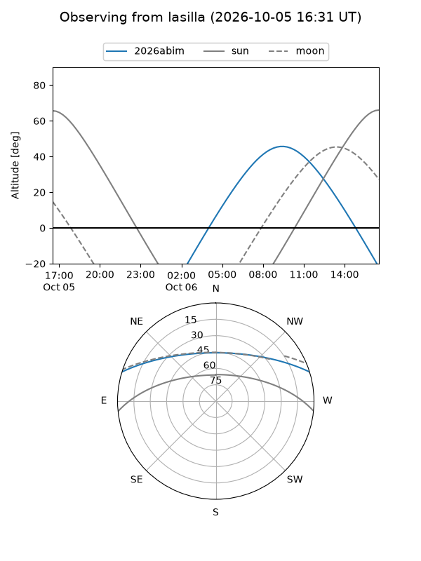
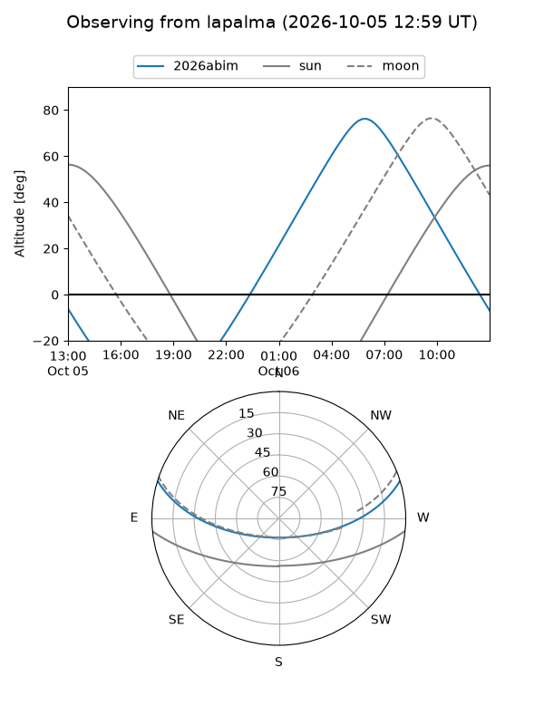
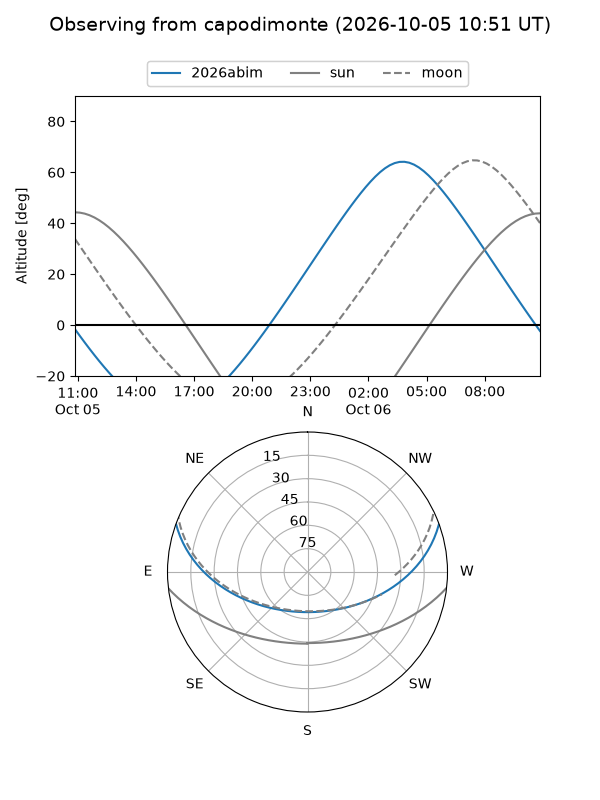
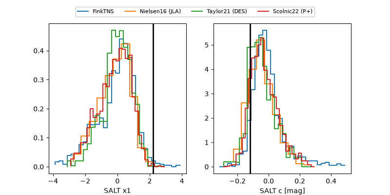

2026abim
Target 2026abim at 2026-10-05 10:28
Aliases and brokers:
FINK-ZTF: ztf.fink-portal.org/ZTF26abrmbme
Lasair-ZTF: lasair-ztf.lsst.ac.uk/objects/ZTF26abrmbme
ALeRCE-ZTF: alerce.online/object/ZTF26abrmbme
YSE-PZ: ziggy.ucolick.org/yse/transient_detail/2026abim
TNS name: wis-tns.org/object/2026abim
Direct TNS query: direct search
alt names
ZTF26abrmbme (ztf,fink_ztf)
2026abim (tns,yse)
PS26iag (panstarrs)
Coordinates:
equatorial (ra, dec) = 85.0511,+15.03099
equatorial (HMS+DMS) = 05:40:12.25,+15:01:51.57
galactic (l, b) = (191.2546,-8.31536)
Flags:
TNS type: nan
peak dt: +20.7
Photometry:
last ztfg=19.54, ztfr=18.58
2 ztfg, 3 ztfr detections
Lightcurve

Visibility



Additional plots
